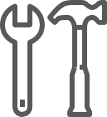
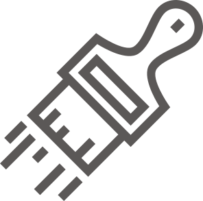
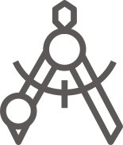

Профессиональный экспорт вакуумного оборудования, включая логистику, сертификацию, экспертизу для ФСТЭК и перевод технической документации.
Услуги

Транспортировка, монтаж и подключение научного, лабораторного и производственного оборудования в Казани и по Татарстану.
Пусконаладка и технологическое сопровождение оборудования с настройкой параметров процесса под требования производства.
Вакуумная металлизация магнетронными и дуговыми источниками для расширения ассортимента выпускаемой продукции.

CAD-проектирование оснастки с учётом температурного расширения, изготовление пресс-форм и штампов с точными размерами.
Повышение производительности, обновление узлов и адаптация процессов под новые требования к покрытиям.

Изготовление деталей и узлов с применением современного оборудования и контролем качества на каждом этапе.
Оценка и расчёт стоимости механообработки с гарантией для оптимизации производственных затрат.